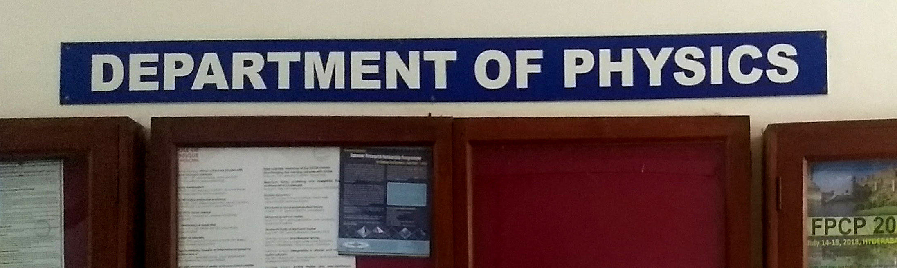
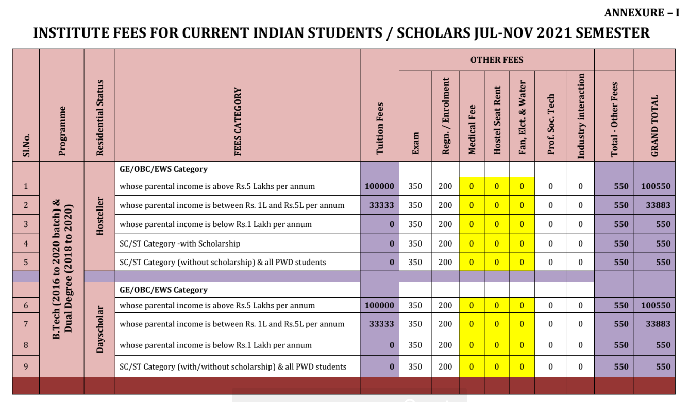
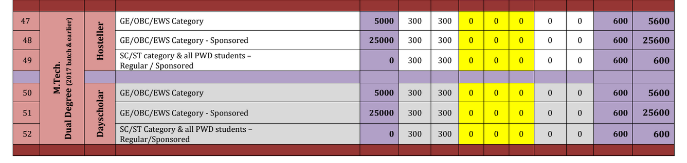

BS+MS in Physics Dual Degree Programme in IIT Madras
This page displays the important information about the Bachelor of Science (B.S.) and Master of Science (M.S.) Dual Degree programme at Indian Institute Technology, Madras (Chennai).
Objective section

Contents
General Description
This is a programme which begins after 12th standard and takes a minimum of 5 years to complete. When you graduate you are presented with two degree certificates BS and MS. This programme is hosted by the Department of Physics at IIT Madras. The program was initiated together with IISERs in mid-2000s[citation needed]. The branch capacity is 10, however the number fluctuates from 6 to 13 (please check the category split-up in the Admission section).The program consists of 10 semesters, each semester runs for 4 months each (including exams). Saturday-Sunday are non-instructional days, and the students get 4 months of vacation every year. The students need to complete 554 credits totally in order to graduate, majority of those credits being from the Physics department. Hence the student must take 55.4 each semester on average. A single credit is equal to an hour of work per week. 55 credits load in a semester means a load of 55 hours of total study per week (according to institute expectation).
An option of graduating with honours is also present.
Curriculum
Majority of the courses in this program will be done under the physics department. Addtionally you must complete a certain number of core courses in other departments, as well a certain number of mandated elective credits from the departments of Mathematics and Humanitites. Apart from that, a large portion of total credits is considered 'Free Credits', you can take courses from any department within IIT Madras or online on NPTEL to fill these.The first year is almost identical for all science and engineering undergraduates at IIT Madras. In the second year you will do undergraduate courses in Physics, Mathematics and Computation. Third and fourth years will be shared with an MSc batch, and in the fifth year you will mainly focus on your 'Dual Degree Project' which is an 85 credit year long research project you must undertake for your master's.
Find the entire curriculum on the page 52 of this portable document.
You can also see the curriculum in brief on the department website here.
Admission
There is only one admission channel which is through the Joint Entrance Examination (Advanced). The JEE is a nation-wide multi-stage examination for pre-university students. One needs to qualify JEE Adv in their respective category to be eligible for an entrance to the program. JEE(Adv) as such is a highly competitive exam which has three subjects: Mathematics, Physics and Chemistry.Please find the 2020 opening and closing ranks per category below.
(Up-to-date information can always be found on JOSAA's website.)
| Seat Type | Gender | Opening Rank | Closing Rank |
|---|---|---|---|
| OPEN | Gender-Neutral | 1772 | 2397 |
| OPEN | Female-only (including Supernumerary) | 9778 | 9778 |
| EWS | Gender-Neutral | 1327 | 1327 |
| OBC-NCL | Gender-Neutral | 1807 | 2201 |
| OBC-NCL | Female-only (including Supernumerary) | 5199 | 5199 |
| SC | Gender-Neutral | 1411 | 1411 |
| SC | Female-only (including Supernumerary) | 2115 | 2115 |
| ST | Gender-Neutral | 702 | 702 |
Fee structure and Scholarships
Fee structure
For the first 4 years of this program, one must pay the undergraduate (or B.Tech.) fees;
In the fifth year you pay the post-graduate (or M.Tech.) fees;
Scholarships
The Department of Science and Technology, Governement of India awards 12,000 INSPIRE(Innovation in Science Pursuit for Inspired Research) SHE(Scholarships for Higher Education). Each scholarship amounts to INR 60,000 to INR 80,000 per year. There are 5 ways to be eligible for this scholarship.You can see more information here: https://online-inspire.gov.in/Account/FAQ